Российский университет дружбы народов им. П. Лумумбы
Цель работы
Ознакомление с инструментами поиска файлов и фильтрации текстовых
данных. Приобретение практических навыков: по управлению процессами (и
заданиями), по проверке использования диска и обслуживанию файловых
систем.
Задание
Осуществите вход в систему, используя соответствующее имя
пользователя.
Запишите в файл file.txt названия файлов, содержащихся в каталоге
/etc. Допишите в этот же файл названия файлов, содержащихся в вашем
домашнем каталоге.
Выведите имена всех файлов из file.txt, имеющих расширение .conf,
после чего запишите их в новый текстовой файл conf.txt.
Определите, какие файлы в вашем домашнем каталоге имеют имена,
начинавшиеся с символа c? Предложите несколько вариантов, как это
сделать.
Выведите на экран (по странично) имена файлов из каталога /etc,
начинающиеся с символа h.
Запустите в фоновом режиме процесс, который будет записывать в файл
~/logfile файлы, имена которых начинаются с log.
Удалите файл ~/logfile.
Запустите из консоли в фоновом режиме редактор gedit.
Определите идентификатор процесса gedit, используя команду ps,
конвейер и фильтр grep. Как ещё можно определить идентификатор
процесса?
Прочтите справку (man) команды kill, после чего используйте её для
завершения процесса gedit.
Выполните команды df и du, предварительно получив более подробную
информацию об этих командах, с помощью команды man.
Воспользовавшись справкой команды find, выведите имена всех
директорий, имеющихся в вашем домашнем каталоге.
Выполнение лабораторной
работы
Записала в файл file.txt названия файлов из каталога /etc с помощью
перенаправления. В файл я добавила также все файлы из подкаталогов.
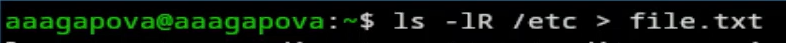
Запись файла
Проверила, что в файл записались нужные значения.
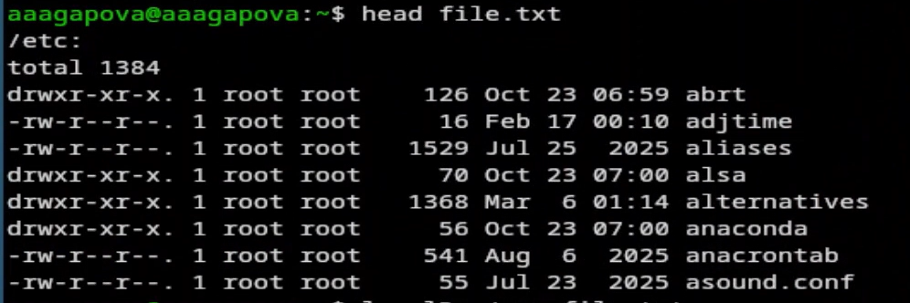
Вывод содержимого файла
Добавила в созданный файл имена файлов из домашнего каталога.
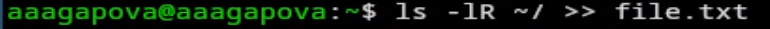
Добавление данных в файл
Вывела на экран имена всех файлов, имеющих расширение .conf.
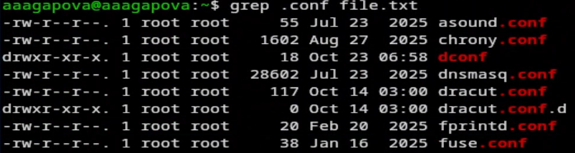
Вывод файлов
Добавила вывод прошой команды в новый файл conf.txt.
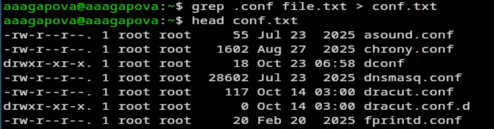
Запись файла
Определяю какаие файлы начинаются с символа С.
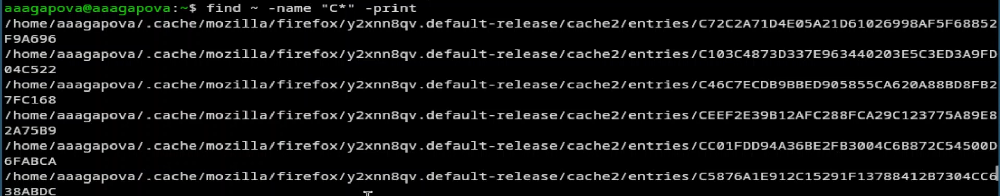
Поиск файлов
Ищу все файлы, начинающиеся с h.
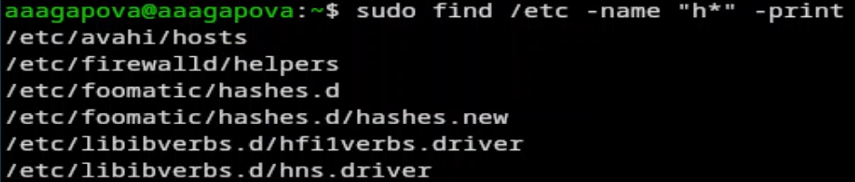
Поиск файлов
Запускаю в фоновом режиме процесс, который будет записывать в файл
logfile файлы, которые начинаются с log.
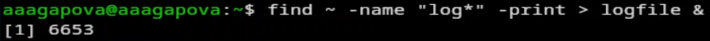
Создание процесса
Проверяю, что файл создан, удаляю его и проверяю.
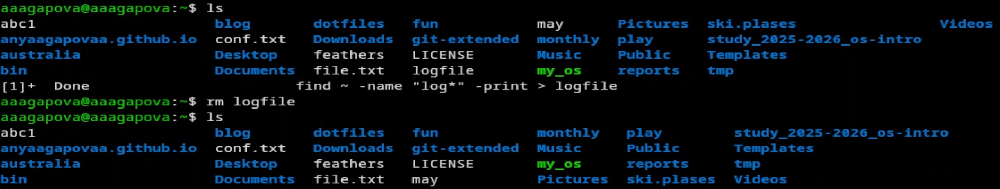
Удаление файла
Запускаю в консоли в фоновом режиме редактор mousepad. Он идентичен
с gedit.
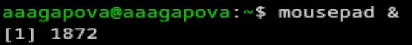
Создание процесса
Определяю индентификатор процесса mousepad.
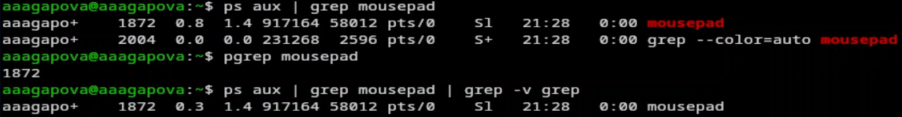
Индентификатор процесса
Читаю документацию команды kill.
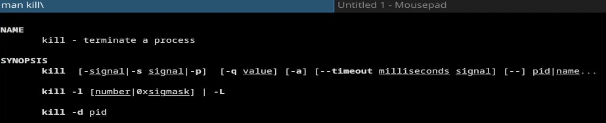
Чтение документации
Использую команду kill и индентификатор процесса, чтобы его
удалить.
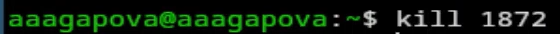
Удаление процесса
Читаю документацию о командах df и du.
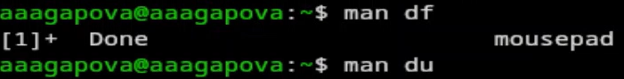
Чтение документации
Смотрю сколько свободного места есть у нашей системы.
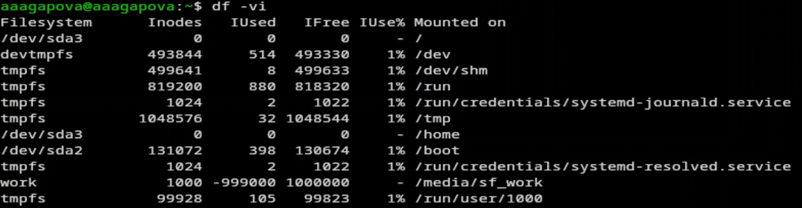
Свободное место
Смотрю сколько места занимают файлы в определенной директории и
нахожу самое большое из них.
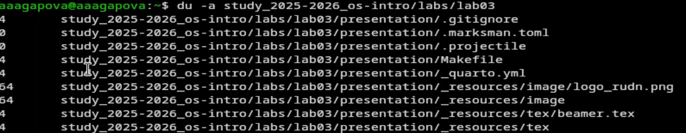
Место файла
Читаю документацию о команде find.
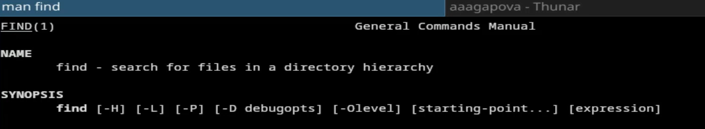
Чтение документации
Вывожу имена всех директорий из домашнего каталога.
Имена директорий
Выводы
Я ознакомилась с инструментами поиска файлов и фильтрации текстовых
данных, а также приобрела практические навыки по управлению процессами,
по проверке использования диска и по обслуживанию файловых систем.